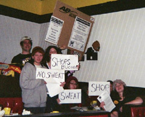

story on sweatshop audit begins to spin in the City of Pittsburgh
Submitted on Wed, 02/14/2007 - 1:54pm
This is the resolution Council President Doug Shields was discussing with members of the Pittsburgh Anti Sweatshop Community Alliance on Feb 12...
A Resolution authorizing and directing the Controller of the City of Pittsburgh to conduct a full Performance Audit to assure compliance with Ordinance 32 of 1997 entitled "Title One Administrative, Article VII, Procedures, Chapter 161 Contracts, Section 161.16, Required Provisions in Contracts, to Prevent the purchase, lease, rental or taking on consignment, any goods, or products made under sweatshop conditions.”
WHEREAS, Pittsburgh has a rich history as a city at the forefront of examining the moral issues related to worker treatment in an industrialized economy and as a place where the rights of labor are passionately protected; and
WHEREAS, "sweatshop" conditions, which include poverty wages, forced overtime, unsafe working conditions, firings and blacklisting in response to attempts to organize unions, mandatory pregnancy tests, firings for pregnancy, and other violations of women's rights, are so widespread in the apparel industry that they could be considered the norm and not the exception; and
WHEREAS, there is an "academic standard" of sweatshop accountability supported by over 160 universities nationwide, including Carnegie Mellon University; and
WHEREAS, the Council of the City of Pittsburgh, approved legislation on July 11, 2007 that does urge all organizations that are part of the Pittsburgh community to commit themselves to eliminating the use and sale of products that were produced in sweatshop conditions further reinforcing our strong commitment on this issue, and
WHEREAS, the City of Pittsburgh has already adopted sweatshop-free procurement policies, legislation intended to protect the rights of workers which correctly reflect the values of our city; and
WHEREAS, said policies are codified in Ordinance 32 of 1997 entitled "Title One Administrative, Article VII, Procedures, Chapter 161 Contracts, Section 161.16, Required Provisions in Contracts, to Prevent the purchase, lease, rental or taking on consignment, any goods, or products made under sweatshop conditions;” and,
WHEREAS, the Controller of the City of Pittsburgh is charged with auditing City of Pittsburgh compliance with all ordinances; therefore,
Be it resolved by the Council of the City of Pittsburgh as follows:
Section 1. The Council of the City of Pittsburgh authorizes and directs the Controller of the City of Pittsburgh to conduct a Performance Audit to assure compliance with Title One Administrative, Article VII, Procedures, Chapter 161 Contracts, Section 161.16, Required Provisions in Contracts, to Prevent the purchase, lease, rental or taking on consignment, any goods, or products made under sweatshop conditions.
Section 2. The Controller of the City of Pittsburgh will commence this Performance Audit within 90 days of the passage of this legislation.. The Audit shall be conducted in a timely manner and a report of its findings shall be presented to the Council.
Sponsored By Council President Douglas Shields
-----
This is the Post Gazette article that appeared on it's website at 4:10 on February 13
City OKs joint purchasing with county
Tuesday, February 13, 2007
By Rich Lord, Pittsburgh Post-Gazette
Tuesday, February 13, 2007
By Rich Lord, Pittsburgh Post-Gazette
Pittsburgh City Council gave final approval today to cooperation with Allegheny County on purchasing goods, rejecting a broader measure and calling for an audit of city compliance with an ordinance against buying the wares of sweatshops.
In a unanimous vote, council agreed to allow the county to buy some $10 million a year in items, from uniforms to trucks, on behalf of the city. Mayor Luke Ravenstahl has said the resulting bulk buying discounts could save the city $1 million a year. The arrangement still needs County Council's approval.
In a unanimous vote, council agreed to allow the county to buy some $10 million a year in items, from uniforms to trucks, on behalf of the city. Mayor Luke Ravenstahl has said the resulting bulk buying discounts could save the city $1 million a year. The arrangement still needs County Council's approval.
Councilman William Peduto, who is running for mayor, pushed legislation requiring a full city-county purchasing merger -- including construction contracts and professional services -- within 300 days, but wasn't able to get a second vote.
In response to concerns of anti-sweatshop activists, Council President Doug Shields asked Acting City Controller Tony Pokora to audit the city's enforcement of a law against buying from sweatshops. The city asks suppliers to sign forms confirming that they don't buy from sweatshops, and Mr. Shields wants to know whether the forms are being "utilized as the law requires."
Though anti-sweatshop activists have asked for more aggressive enforcement measures, Mr. Shields said there's no way the city can definitively verify that suppliers aren't buying from Third World sweatshops.
-----
This is the Post Gazette article as it appeared in the paper on Valentine's Day
City joins wiht Allegheny County for purchasing
Wednesday, February 14, 2007
Pittsburgh City Council gave final approval yesterday to cooperation with Allegheny County on purchasing goods, rejecting a broader measure and calling for an audit of compliance with an ordinance against buying the wares of sweatshops.
In a unanimous vote, council agreed to have the county buy some $10 million a year in items, from uniforms to trucks, on the city's behalf. Mayor Luke Ravenstahl has said bulk buying discounts could save the city $1 million a year. The arrangement still needs County Council's approval.
Councilman William Peduto, who is running for mayor, pushed legislation requiring a full city-county purchasing merger -- including construction contracts and professional services -- within 300 days, but wasn't able to get a second vote.
In response to concerns of activists, Council President Doug Shields asked Acting City Controller Tony Pokora to audit the city's enforcement of a law against buying from sweatshops. The city asks suppliers to sign forms confirming that they don't buy from sweatshops, and Mr. Shields wants to know whether the forms are being "utilized as the law requires."